DO NOT BOTHER YOURSELF THE BRIGHT ONE, THERE ARE SO MANY REASONS YOU NEED TO STUDY LEATHERWORK.
Introduction to Leatherwork
Leatherwork is defined as the art and craft of processing animal hides and skins into durable, versatile materials and fashioning these materials into functional or decorative objects. This ancient practice encompasses the entire transformation from raw hide to finished product, including the preparation of skins, the application of tanning agents to prevent decomposition, the manipulation of leather through cutting and shaping, and the assembly of leather components into articles ranging from footwear and garments to furniture, bookbindings, and artistic sculptures. Leatherwork represents one of humanity's earliest technological achievements, with evidence suggesting that prehistoric peoples utilized animal skins for clothing and shelter as far back as the Paleolithic era, developing progressively sophisticated methods of preservation and decoration that laid the foundation for all subsequent leather craft traditions.
The history of leatherwork stretches across the entirety of human civilization, with archaeological discoveries revealing leather artifacts from ancient Egypt dating to approximately 3000 BCE. These early Egyptian leatherworkers produced sandals, bags, belts, and protective armor, demonstrating remarkably advanced techniques for their era. Egyptian mummies have been excavated wearing leather sandals that have endured for millennia, testament to the material's exceptional longevity when properly processed. The ancient civilizations of Mesopotamia, Greece, and Rome further developed leatherworking traditions, with Roman craftsmen producing the iconic caligae military boots, elaborate bookbindings, and luxury goods that signaled social status. Roman leatherworkers mastered dyeing, tooling, and embossing techniques, transforming utilitarian material into expressions of artistic sophistication and personal wealth.
The fundamental process of leather creation involves converting perishable raw animal hides into stable, durable material through the action of tanning agents. Raw hides, composed primarily of collagen protein, will naturally decompose through bacterial action and enzymatic breakdown. Tanning arrests this decay by permanently altering the protein structure, rendering the material resistant to putrefaction while maintaining flexibility and strength. This transformative process, which chemists now understand as the stabilization of collagen triple-helix structures through cross-linking agents, has been practiced in various forms for thousands of years. The earliest tanning methods likely involved simple drying and smoking, progressing to the use of plant tannins, mineral salts, and eventually synthetic chemicals that each impart distinct characteristics to the finished leather.
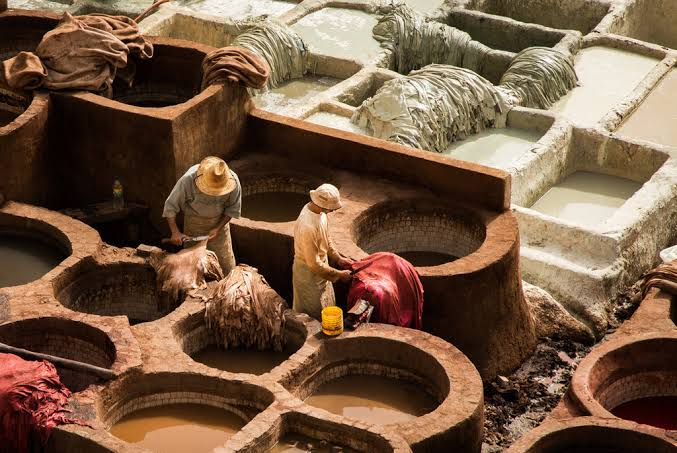
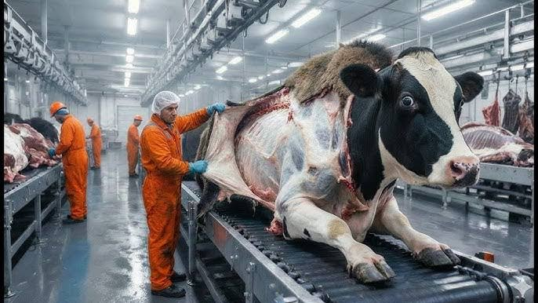
Leatherwork transforms perishable hide into enduring material through the alchemical process of tanning.
Elements and principles of leather design
The principal element of leather design is the raw material itself, specifically the animal hide with its complex layered structure of epidermis, grain, corium, and flesh. The outermost grain layer contains the tightest collagen fiber bundles and the natural surface texture of hair follicles, pores, and skin patterns that impart distinctive character to finished leather. The corium layer beneath consists of larger, more loosely organized collagen bundles that provide bulk and cushioning properties. The quality and characteristics of raw hides vary enormously based on animal species, age, diet, climate, and husbandry practices, with cattle hides dominating commercial production due to their size, availability, and favorable fiber structure. Designers must possess intimate knowledge of these material variations to select appropriate leathers for specific applications, as the inherent properties of the raw material fundamentally constrain and enable all subsequent design decisions.
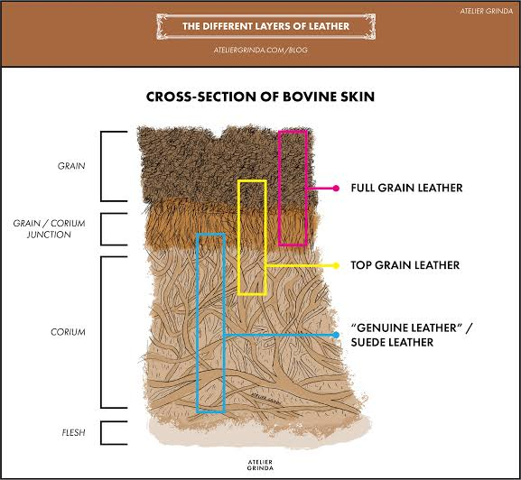
The principal element of leather design is the raw hide with its complex layered structure of grain and corium.
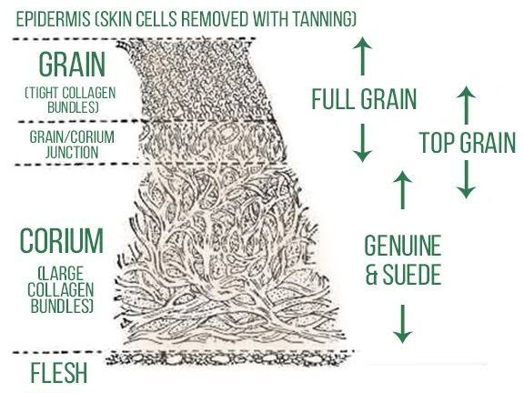
Leather grading categorizes material based on the integrity and processing of the grain surface layer.
Leather types and grades
Full grain leather represents the highest quality category, defined by the preservation of the complete natural grain surface without sanding, buffing, or other corrective procedures. This grade retains the original pore structure, hair follicle patterns, and natural markings that record the animal's life history, including range marks, scratches, and insect bites that constitute authentic character rather than defects. The dense collagen fiber bundles of the grain layer provide exceptional tensile strength and abrasion resistance, while the intact surface allows natural patina development through oxidation and oil absorption. Full grain leather is typically processed with aniline or semi-aniline dyes that penetrate the structure while preserving surface visibility, resulting in material that improves in appearance with age and use. The absence of surface correction requires tanneries to select the cleanest hides for full grain production, contributing to higher material costs that position this grade in premium market segments for footwear, furniture, luggage, and luxury accessories.
Full grain leather preserves the complete natural grain surface, allowing authentic patina development.
Split leather from the corium layer is processed into suede with soft, napped texture.
Tanning and preparation methods
Vegetable tanning represents the oldest and most traditionally significant method of leather preservation, utilizing tannins extracted from plant materials to stabilize collagen structure. This process involves immersing prepared hides in progressively concentrated solutions of tannin derived from tree barks (especially oak, chestnut, and mimosa), leaves, fruits, and roots over a period of weeks or months. The polyphenolic tannin molecules bind to collagen fibers through hydrogen bonding and hydrophobic interactions, creating leather with characteristic firmness, earthy coloration, and excellent tooling properties. Vegetable-tanned leather typically exhibits light colors ranging from pale pink to warm tan, darkening through oxidation and sun exposure to develop rich amber and brown tones. The extended processing time, often 30-60 days in traditional pit tanning, produces leather with distinctive aromatic character and the capacity to develop deep patina, making this method favored for saddlery, tooling leather, shoe soles, and artisanal goods where traditional character outweighs production efficiency.
Chrome tanning, introduced by Auguste Schultz in 1858, revolutionized the leather industry by dramatically reducing processing time while producing soft, flexible leather in pale colors suitable for modern finishing. This mineral tanning process utilizes chromium(III) sulfate and other chromium salts that crosslink collagen fibers through coordination bonds, creating stable leather within 24-48 hours compared to the weeks required for vegetable tanning. Chrome-tanned leather exhibits superior heat resistance, stretch recovery, and dye affinity, enabling the production of thin, soft garment and upholstery leathers in vibrant, consistent colors. The process dominates global leather production, accounting for approximately 80-90% of all tanned leather, due to its efficiency, versatility, and cost-effectiveness. However, chromium tanning generates environmental concerns related to heavy metal discharge, sludge disposal, and the potential formation of toxic chromium(VI) through improper processing, driving regulatory restrictions and the development of chrome-free alternatives.

Vegetable tanning uses plant-derived polyphenols to create firm, earthy leather over weeks or months.
Relationship between leatherwork and other art forms
The bond between leatherwork and other art forms is profoundly intimate, rooted in shared foundations of materiality, texture, color, and cultural expression. Leatherwork has historically served as a critical bridge between functional craft and fine art, occupying a unique position that combines practical utility with aesthetic ambition. The relationship is closest with sculpture, particularly in the domain of molded and formed leather objects that exploit the material's capacity for three-dimensional shaping. Wet-forming techniques, wherein dampened vegetable-tanned leather is stretched and molded over rigid forms before drying, create vessels, masks, and sculptural elements that possess the organic warmth of natural material combined with precise geometric control. Contemporary leather sculptors such as the Spanish artist Jorge de la Garza produce abstract and figurative works that challenge conventional boundaries between craft and art, exhibiting in galleries alongside works in bronze, stone, and ceramic.
On autonomous leather works, too, the close connection with painting is evidenced by the stylistic features that are common to both. Leather and painting agree in many details of content and form. The application of color through dyes and pigments follows principles of hue, value, and saturation that govern painted compositions. Tooled and carved leather surfaces create chiaroscuro effects through shadow and relief that parallel the modeling techniques of painting. The decorative traditions of illuminated manuscripts, with their intricate border designs and figurative scenes, found direct expression in the tooled and painted leather bookbindings of medieval and Renaissance Europe. The Arts and Crafts movement of the late nineteenth century explicitly connected leatherwork to the broader reform of decorative arts, with practitioners such as the Guild of Handicraft producing leather goods that embodied the movement's principles of honest construction and integrated design.
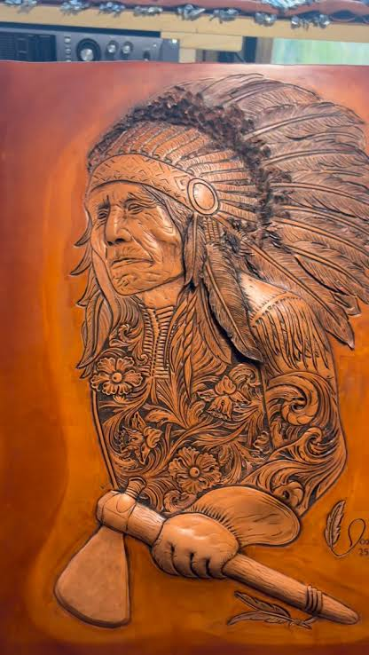
Leatherwork bridges functional craft and fine art through shared materiality and cultural expression.Still closer, perhaps, is the bond between leatherwork and architecture, which works with spatial enclosure and material permanence. Leather has served as an architectural material from ancient times, with stretched leather membranes used for tent shelters and decorative wall coverings. In contemporary interior design, leather wall panels, floor tiles, and ceiling treatments introduce organic warmth and acoustic damping to architectural spaces. The molded leather furniture of designers such as the Danish architect Arne Jacobsen demonstrates how leather can be integrated into structural design, with formed leather shells providing both seating surfaces and structural components. The relationship between leather and architectural metalwork is particularly significant in the Art Deco and Art Nouveau periods, where leather upholstery and panels complemented forged iron and cast bronze in unified decorative schemes.
Surface treatments and finishes
The surface of a leather article represents the primary interface between the material and both the human hand and the external environment, making surface treatments and finishes among the most consequential processes in leather production. Aniline finishing applies soluble dyes that penetrate the leather structure while preserving the natural grain visibility, producing transparent coloration that allows surface character to remain apparent. This finish type yields the most natural and luxurious appearance but offers minimal protection against staining, fading, and moisture damage, requiring careful maintenance and limiting application to low-wear, controlled environments. Semi-aniline finishing adds a thin protective topcoat to aniline-dyed leather, improving stain and scratch resistance while maintaining substantial natural appearance. Pigmented finishing applies opaque color coatings that completely obscure the natural grain, providing maximum protection and color consistency but sacrificing the depth and character of transparent finishes. These finishing categories establish a fundamental trade-off between natural aesthetics and practical durability that guides leather selection for specific applications.

Surface finishes establish a trade-off between natural aesthetics and practical durability.

Mechanical and chemical treatments modify leather texture, appearance, and functional properties.
Tools and techniques of leather production
The tools and techniques of leather production span from prehistoric stone scrapers to sophisticated CNC cutting systems, reflecting the evolution of human technology and the increasing complexity of leather goods manufacturing. The fundamental tools of hide preparation include fleshing knives that remove subcutaneous tissue, beam knives that scrape the hair and epidermis, and lime pits or drums that loosen hair through alkaline treatment. Tanning operations require mixing vessels, whether traditional pits or modern rotating drums, along with chemical handling and monitoring equipment to maintain proper pH, temperature, and reagent concentration. Post-tanning processing employs setting-out machines that stretch and flatten hides, shaving machines that reduce thickness to specification, and drying equipment that controls moisture content before finishing. These preparatory tools establish the material foundation upon which all subsequent leather crafting depends, with the quality of preparation largely determining the potential of the finished leather.
No less varied than the nature and composition of these tools is their aesthetic effect on the finished leather article. Hand tools for leather crafting include the swivel knife, which rotates in the fingers to cut curved outlines for carving and tooling; stamping tools of various shapes that impress decorative patterns when struck with a mallet; bevelers that create sloped edges around carved designs to produce three-dimensional relief; and backgrounders that texture the surface surrounding raised motifs to enhance visual contrast. Stitching chisels and pricking irons create evenly spaced holes for hand-sewing, while harness needles and waxed linen or synthetic threads join components with durable, decorative seams. Edge tools round, groove, and burnish cut edges to professional finish. These hand tools, many essentially unchanged for centuries, enable the artisanal production of leather goods that maintain traditional craft values in an era of industrial manufacturing.
Cutting and skiving
Cutting is the fundamental operation of separating leather into shaped components that will be assembled into finished articles. Unlike woven textiles, leather is not a uniform sheet material but a biological product with variable thickness, density, and stretch characteristics that vary across the hide and between individual hides. The leatherworker must strategically position pattern pieces to align with the directional grain, avoid natural defects, and maximize material yield from each hide. Traditional cutting employs sharp knives guided by metal or acrylic templates, with the cutter angling the blade to achieve clean edges and following the template contour with practiced precision. Clicking is the specialized term for leather cutting derived from the sound of the knife blade striking the brass-tipped pattern, and skilled clickers represent the most experienced workers in traditional leather factories, commanding premium wages for their material judgment and cutting accuracy.
Skiving is the technique of thinning leather edges or areas to reduce bulk, create smooth transitions, and enable folded constructions. A skiving knife, with its angled blade and guide fence, shaves thin layers from the leather underside to create beveled edges that fold neatly without creating ridges. In shoemaking, skiving reduces the thickness of upper edges where multiple layers overlap at seams and closures. In bag making, skiving enables the folded edges of gussets and pockets to lie flat without visible bulk. Machine skiving uses rotating cylindrical knives with adjustable depth settings for consistent, rapid thinning of straight or curved edges. Hand skiving with a paring knife or French skiver allows greater control for irregular shapes and delicate materials. The skiving operation requires precise judgment, as excessive thinning weakens the material while insufficient skiving results in bulky, unprofessional construction.
Modern cutting technologies have supplemented and partially replaced traditional hand cutting in industrial production. Hydraulic clicker presses use steel rule dies to stamp out multiple components simultaneously with high consistency. CNC cutting systems employ oscillating knives, rotary blades, or laser beams to cut complex shapes directly from digital patterns without physical templates. Laser cutting offers particular advantages for intricate decorative patterns and perforations, though the thermal process can seal cut edges and produce slight discoloration. Waterjet cutting uses high-pressure abrasive streams for thick materials or multi-layer cutting. These automated systems improve production speed, pattern accuracy, and material optimization through computer-aided nesting algorithms that maximize hide yield. However, hand cutting remains essential for custom work, prototype development, and materials with irregular characteristics that challenge automated systems.
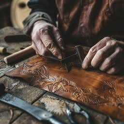
Cutting separates leather into components while skiving thins edges for smooth, bulk-free construction.
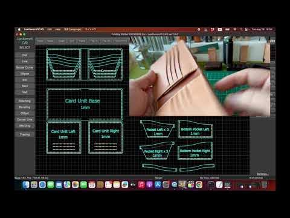
Pattern engineering accounts for leather directionality to ensure dimensional stability in finished goods.
Stamping and carving
Stamping is the technique of impressing decorative patterns into leather surfaces through the application of shaped tools struck with a mallet. This decorative method has ancient origins, with evidence of stamped leather from Egyptian and Roman archaeological sites demonstrating the long history of surface embellishment. Stamping tools, typically made from high-carbon steel with hardened faces, come in thousands of designs including geometric shapes, floral motifs, border patterns, and figurative elements. The leatherworker positions the tool on the dampened vegetable-tanned leather surface and strikes the opposite end with a rawhide or wooden mallet, driving the pattern into the material through compression. Multiple tools used in combination create complex, layered designs with varied texture and depth. The skill of stamping lies in maintaining consistent depth and alignment across the design while controlling the leather's moisture content, as overly dry leather resists impression while excessively wet material distorts under pressure.
Carving extends stamping into three-dimensional relief by cutting the leather surface with a swivel knife and then shaping the surrounding material to create raised designs. The process begins with transferring a paper pattern to dampened leather, then cutting the design outline with a swivel knife that rotates between the fingers to follow curved lines. Beveling tools, struck with a mallet like stamps, compress the leather immediately adjacent to the cut line, creating a sloped transition that makes the uncut center appear raised. Background tools texture the surrounding surface to create visual contrast with the smooth, raised motif. Shading tools add subtle depressions that suggest light, shadow, and volume. These techniques, developed to high sophistication in the American West for saddle and boot decoration, enable leatherworkers to create pictorial scenes, intricate floral patterns, and personalized designs that transform utilitarian objects into unique artworks.
The Western leather carving tradition, which emerged from Mexican vaquero culture and was refined by American saddlemakers, represents the most internationally recognized style of leather tooling. Characterized by flowing floral patterns, scrollwork, and geometric borders, Western tooling typically covers large surface areas with symmetrical, repetitive designs that showcase the craftsperson's precision and stamina. The Sheridan style, named for the Wyoming town where it developed, features carved flowers with distinctive three-petal centers surrounded by flowing leaves and stems. The basketweave pattern, created by repeatedly impressing a rectangular stamp in alternating orientations, provides textural backgrounds that complement carved motifs. These decorative conventions, while associated with cowboy culture, have influenced contemporary leather design globally, with tooled patterns appearing on fashion accessories, furniture, and art objects far removed from their ranching origins.
European leather carving traditions developed distinct aesthetic character in different regions and applications. The Cordovan tradition of Spain, centered in the city of Córdoba, produced elaborately tooled leather wall hangings, screens, and furniture coverings from the Middle Ages through the Renaissance, with intricate geometric patterns reflecting Islamic artistic influence. Italian leatherworkers, particularly in Florence, developed refined techniques for gold tooling on bookbindings, using heated tools to impress designs through gold leaf into dyed leather covers. The French tradition of gaufrage (embossing) created elaborate pictorial scenes on leather panels for furniture and architectural applications. These European traditions emphasized precision, classical motifs, and integration with other decorative arts, contrasting with the bolder, more expansive character of American Western tooling.
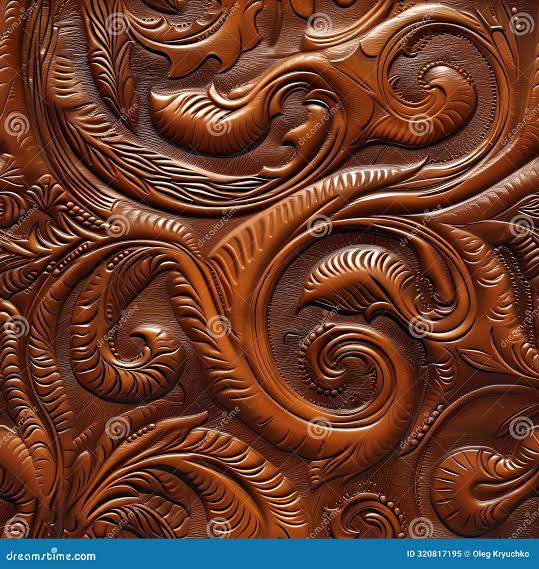
Stamping and carving transform flat leather surfaces into three-dimensional decorative reliefs.
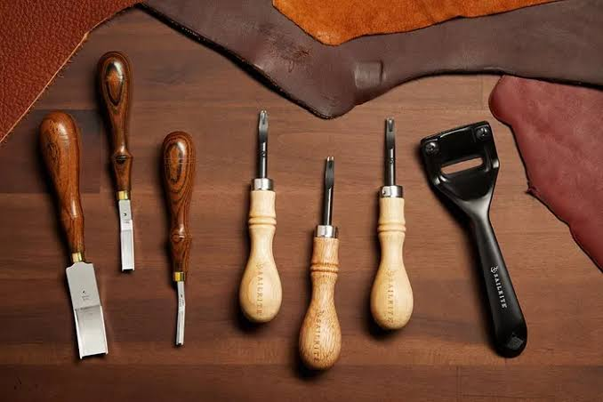
Vegetable-tanned leather provides the ideal firm, water-responsive structure for tooling and carving.
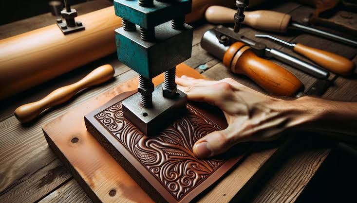
Embossing creates permanent impressions through heated dies pressed into softened leather surfaces.

Digital craft communities have democratized access to leather carving techniques globally.
Dyeing and coloring
Leather dyeing is the process of applying colorants to leather to achieve desired hues while preserving or modifying the material's natural appearance. Unlike textile dyeing, which typically occurs at the fiber stage before spinning, leather dyeing usually occurs after tanning when the collagen structure has been stabilized. The chemistry of leather dyeing involves the interaction between dye molecules and the tanned collagen matrix, with different dye classes exhibiting varying affinities and penetration characteristics. Acid dyes, which carry negative charges, bond with the positively charged amino groups present in chrome-tanned leather, producing vibrant colors with good penetration. Basic or cationic dyes bond with the negatively charged carboxyl groups in vegetable-tanned leather. Direct dyes penetrate without strong chemical bonding, relying on physical entanglement within the fiber structure. The selection of dye type must correspond to the leather's tanning chemistry to achieve optimal color yield, fastness, and uniformity.
The application of leather dyes requires careful surface preparation and technique to achieve professional results. Undyed vegetable-tanned leather, often called "natural" or "russet" leather, provides the most receptive surface for dye application, with the pale tan color allowing dye colors to appear true to expectation. Pigmented or previously finished leather must be stripped of existing coatings before dyeing to ensure penetration. Dyes are typically applied with wool daubers, sponges, or airbrushes, with the applicator choice affecting color uniformity and pattern capability. Multiple thin applications produce more even color than single heavy coats, which may pool in low areas and create streaking. After dye application, the leather must be allowed to dry completely before buffing with a clean cloth to remove surface dye and prevent crocking (color transfer). Finishing with oils, waxes, or acrylic topcoats seals the dye layer and provides protection against moisture and abrasion.
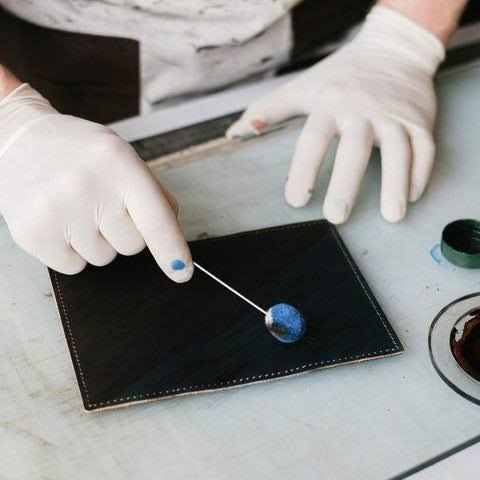
Leather dyeing applies colorants to stabilized collagen, with dye selection matching tanning chemistry.
Stitching and assembly
Stitching is the primary method of joining leather components into functional articles, creating structural connections that must withstand mechanical stress while contributing to aesthetic appearance. Unlike textile sewing, which typically joins flexible, thin materials with minimal bulk, leather stitching must accommodate material thickness, resist tearing at stitch holes, and often serve as a visible decorative element. The saddle stitch, considered the strongest and most traditional hand-sewing method for leather, uses two needles threaded on opposite ends of a single length of waxed cord, with the needles passing through each hole from opposite sides and crossing within the material. This creates a locked stitch that will not unravel if one loop is broken, unlike machine lockstitching where a broken thread can cause seam failure. The saddle stitch's durability and handcrafted appearance make it the preferred method for high-quality leather goods, though it requires significant skill and time compared to machine alternatives.
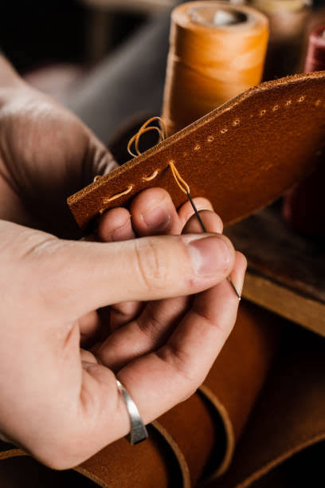
The saddle stitch creates locked, durable seams that will not unravel if one loop breaks.
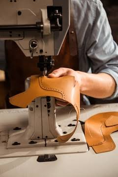
Assembly techniques include lacing, riveting, gluing, and molding beyond traditional stitching.
Modern leather technology
Modern leather technology encompasses the convergence of advanced materials science, biotechnology, and digital manufacturing to create leather materials and products that extend beyond traditional capabilities. Lab-grown leather, also known as cultured or biofabricated leather, represents the most revolutionary development, utilizing tissue engineering techniques to grow collagen-based materials without animal slaughter. Companies such as Modern Meadow, VitroLabs, and Lab-Grown Leather Ltd have developed processes that cultivate animal cells in bioreactors, providing nutrients and growth signals that stimulate collagen production and tissue formation. The resulting material, composed of collagen and extracellular matrix proteins identical to conventional leather, can be tanned and finished using traditional methods while eliminating the environmental impacts of livestock agriculture and the ethical concerns of animal killing. These biofabricated materials promise to replicate the performance and aesthetic qualities of conventional leather while offering improved consistency, customization, and sustainability.

Lab-grown leather utilizes tissue engineering to cultivate collagen-based materials without animal slaughter.
Sustainability and ethics
The contemporary leather industry faces urgent sustainability and ethical challenges that have catalyzed innovation in materials, processes, and consumer practices. Leather production, valued at over $400 billion globally, generates significant environmental impacts including deforestation for cattle ranching, greenhouse gas emissions from livestock, water pollution from tannery effluent containing chromium and other chemicals, and hazardous working conditions in processing facilities. The traditional process of preparing raw hides contributes substantially to environmental pollution, accounting for approximately 75% of oxygen demand, 79% of suspended solids, 100% of sulfide emissions, 85% of nitrogen emissions, and 74% of chloride emissions from leather production. Chrome tanning, while efficient, produces sludge containing heavy metals that require careful disposal, and improper processing can generate toxic hexavalent chromium that poses severe health risks to workers and communities near tanneries.
The leather industry generates significant environmental impacts including deforestation and chemical pollution.

Chrome-free tanning and plant-based alternatives reduce heavy metal pollution and animal dependence.
Future of leatherwork
The future of leatherwork lies at the intersection of biological innovation, digital fabrication, and circular design principles that fundamentally reimagine the relationship between material, maker, and consumer. Biofabrication technologies, including lab-grown collagen materials and engineered microorganisms that produce leather-like proteins, promise to decouple leather production from animal agriculture while maintaining the material's essential characteristics. These cultured materials can be designed with specific properties—strength, elasticity, thickness, texture—that exceed natural variation, enabling customized materials optimized for particular applications. The scalability of bioreactor-based production, once fully developed, could meet global demand for leather goods without the land use, water consumption, and greenhouse gas emissions associated with conventional production. Companies such as Modern Meadow, with their Bio-Alloys™ protein technology, and VitroLabs, with their cell-cultivation platform, are advancing toward commercial viability with materials that offer over 90% renewable carbon content.

Biofabrication promises to decouple leather production from animal agriculture while maintaining essential characteristics.